Xiph.org Video Test Media [derf's collection]
All video sequences are in the uncompressed YUV4MPEG format used by the mjpegtools project unless otherwise indicated. This is the format accepted by the Theora encoder tools. Some encoding parameters such as framerate that were missing from the raw data have been guessed or inferred, and may be incorrect.
All sequences listed here were available at one time on publicly accessible servers or were given to us explicitly to host here, and are believed to be freely redistributable. When available, the appropriate copyright information is included. Some may impose additional restrictions or limitations. See the appropriate copyright file for details.
SD Content and Below


HD Content and Above
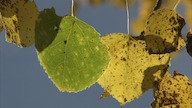 |
aspen (16:9 | 570 frames | readme) Source: ftp://vqeg.its.bldrdoc.gov/HDTV/NTIA_source/ Download: [ 4:2:2 1080p (2.3 GB) ] |
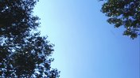 |
blue_sky (16:9 | 217 frames | readme) Source: ftp://ftp.ldv.e-technik.tu-muenchen.de/pub/test_sequences/1080p/blue_sky.yuv Download: [ 1080p (645 MB) ] |
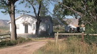 |
controlled_burn (16:9 | 570 frames | readme) Source: ftp://vqeg.its.bldrdoc.gov/HDTV/NTIA_source/ Download: [ 4:2:2 1080p (2.3 GB) ] |
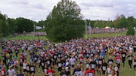 |
crowd_run (16:9 | 500 frames | readme) Source: ftp://vqeg.its.bldrdoc.gov/HDTV/SVT_MultiFormat/1 Download: [ 2160p (5.8 GB) | 1080p (1.5 GB) | 720p 4:4:4 (1.3 GB) 4:2:2 (879 MB) 4:2:0 (660 MB) ] |
dinner (16:9 | 950 frames | copyright) Source: http://www.hdgreetings.com/other/ecards-video/video-1080p.aspx2 Download: [ 1080p (2.8 GB) ] |
|
ducks_take_off (16:9 | 500 frames | readme) Source: ftp://vqeg.its.bldrdoc.gov/HDTV/SVT_MultiFormat/1 Download: [ 2160p (5.8 GB) | 1080p (1.5 GB) | 720p 4:4:4 (1.3 GB) | 4:2:2 (879 MB) | 4:2:0 (660 MB) ] |
|
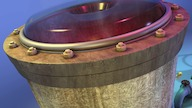 |
factory (16:9 | 1339 frames | copyright) Source: http://www.hdgreetings.com/other/ecards-video/video-1080p.aspx2 Download: [ 1080p (3.9 GB) ] |
in_to_tree (16:9 | 500 frames | readme) Source: ftp://vqeg.its.bldrdoc.gov/HDTV/SVT_MultiFormat/1 Download: [ 2160p (5.8 GB) | 1080p (1.5 GB) | 720p 4:4:4 (1.3 GB) 4:2:2 (879 MB) 4:2:0 (660 MB) ] |
|
life (16:9 | 825 frames | copyright) Source: http://www.hdgreetings.com/other/ecards-video/video-1080p.aspx2 Download: [ 1080p (2.4 GB) ] |
|
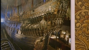 |
mobcal (16:9 | 504 frames | readme) Source: ftp://ftp.ldv.e-technik.tu-muenchen.de/pub/test_sequences/720p/720p50_mobcal_ter.yuv Download: [ 720p (666 MB) ] |
old_town_cross (16:9 | 500 frames | readme) Source: ftp://vqeg.its.bldrdoc.gov/HDTV/SVT_MultiFormat/1 Download: [ 2160p (5.8 GB) | 1080p (1.5 GB) | 720p 4:4:4 (1.3 GB) 4:2:2 (879 MB) 4:2:0 (660 MB) ] |
|
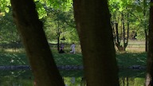 |
park_joy (16:9 | 500 frames | readme) Source: ftp://vqeg.its.bldrdoc.gov/HDTV/SVT_MultiFormat/1 Download: [ 2160p (5.8 GB) | 1080p (1.5 GB) | 720p 4:4:4 (1.3 GB) 4:2:2 (879 MB) 4:2:0 (660 MB) ] |
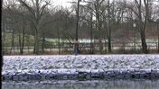 |
parkrun (16:9 | 504 frames | readme) Source: ftp://ftp.ldv.e-technik.tu-muenchen.de/pub/test_sequences/720p/720p50_parkrun_ter.yuv Download: [ 720p (666 MB) ] |
pedestrian_area (16:9 | 375 frames | readme) Source: ftp://ftp.ldv.e-technik.tu-muenchen.de/pub/test_sequences/1080p/pedestrian_area.yuv Download: [ 1080p (1.1 GB) ] |
|
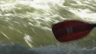 |
red_kayak (16:9 | 570 frames | readme) Source: ftp://vqeg.its.bldrdoc.gov/HDTV/NTIA_source/ Download: [ 4:2:2 1080p (2.3 GB) ] |
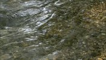 |
riverbed (16:9 | 250 frames | readme) Source: ftp://ftp.ldv.e-technik.tu-muenchen.de/pub/test_sequences/1080p/riverbed.yuv Download: [ 1080p (743 MB) ] |
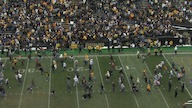 |
rush_field_cuts (16:9 | 570 frames | readme) Source: ftp://vqeg.its.bldrdoc.gov/HDTV/NTIA_source/ Download: [ 4:2:2 1080p (2.3 GB) ] |
rush_hour (16:9 | 500 frames | readme) Source: ftp://ftp.ldv.e-technik.tu-muenchen.de/pub/test_sequences/1080p/rush_hour.yuv Download: [ 1080p (1.5 GB) ] |
|
shields (16:9 | 504 frames | readme) Source: ftp://ftp.ldv.e-technik.tu-muenchen.de/pub/test_sequences/720p/720p50_shields_ter.yuv Download: [ 720p (666 MB) ] |
|
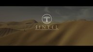 |
sintel_trailer (16:9 | 1253 frames | readme) Download: [ 1080p (3.7 GB) | 720p (1.7 GB) | 480p (735 MB) | [ FLAC audio ] |
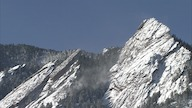 |
snow_mnt (16:9 | 570 frames | readme) Source: ftp://vqeg.its.bldrdoc.gov/HDTV/NTIA_source/ Download: [ 4:2:2 1080p (2.3 GB) ] |
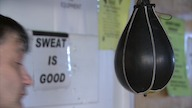 |
speed_bag (16:9 | 570 frames | readme) Source: ftp://vqeg.its.bldrdoc.gov/HDTV/NTIA_source/ Download: [ 4:2:2 1080p (2.3 GB) ] |
station2 (16:9 | 313 frames | readme) Source: ftp://ftp.ldv.e-technik.tu-muenchen.de/pub/test_sequences/1080p/station2.yuv Download: [ 1080p (930 MB) ] |
|
stockholm (16:9 | 604 frames | readme) Source: ftp://ftp.ldv.e-technik.tu-muenchen.de/pub/test_sequences/720p/720p5994_stockholm_ter.yuv Download: [ 720p (798 MB) ] |
|
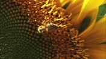 |
sunflower (16:9 | 500 frames | readme) Source: ftp://ftp.ldv.e-technik.tu-muenchen.de/pub/test_sequences/1080p/sunflower.yuv Download: [ 1080p (1.5 GB) ] |
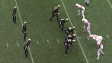 |
touchdown_pass (16:9 | 570 frames | readme) Source: ftp://vqeg.its.bldrdoc.gov/HDTV/NTIA_source/ Download: [ 4:2:2 1080p (2.3 GB) ] |
tractor (16:9 | 690 frames | readme) Source: ftp://ftp.ldv.e-technik.tu-muenchen.de/pub/test_sequences/1080p/tractor.yuv Download: [ 1080p (2.1 GB) ] |
|
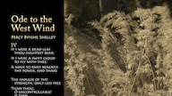 |
west_wind_easy (16:9 | 570 frames | readme) Source: ftp://vqeg.its.bldrdoc.gov/HDTV/NTIA_source/ Download: [ 4:2:2 1080p (2.3 GB) ] |
Full Sequences
Since the files in this section can be very large, they have been compressed with xz. The sizes listed below are those of the uncompressed files.
big_buck_bunny (16:9 | 14315 frames | readme) Source: http://www.bigbuckbunny.org/2 Download: [ 1080p (42 GB) | 720p (19 GB) | NTSC (6.8 GB) | 360p (4.7 GB) ] [ FLAC audio ] |
|
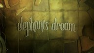 |
elephants_dream (16:9 | 15691 frames | readme) Source: http://www.elephantsdream.org/2 Download: [ 1080p (46 GB) | 720p (21 GB) | NTSC (7.5 GB) | 360p (5.1 GB) ] [ FLAC audio ] |
sita_sings_the_blues (16:9 | 117714 frames | readme) Source: http://www.archive.org/details/Sita_Sings_the_Blues2 Download: [ 1080p (341 GB) | 720p (152 GB) | NTSC (56 GB) | 360p (38 GB) ] [ FLAC audio ] |
1These were converted from 16-bit linear RGB to Y'CbCr using Tobias Oelbaum's sgi2yuv utility, written expressly for this purpose. Because this program uses floating point calculations, the exact values of the output are dependent on the rounding mode and accuracy of the platform used. It is estimated that this affects fewer than 500 pixels per frame.
2These were converted from
8-bit RGB to Y'CbCr using Tobias Oelbaum's
rgb2yuv
utility.
The same caveats as sgi2yuv apply with regards to repeatability.